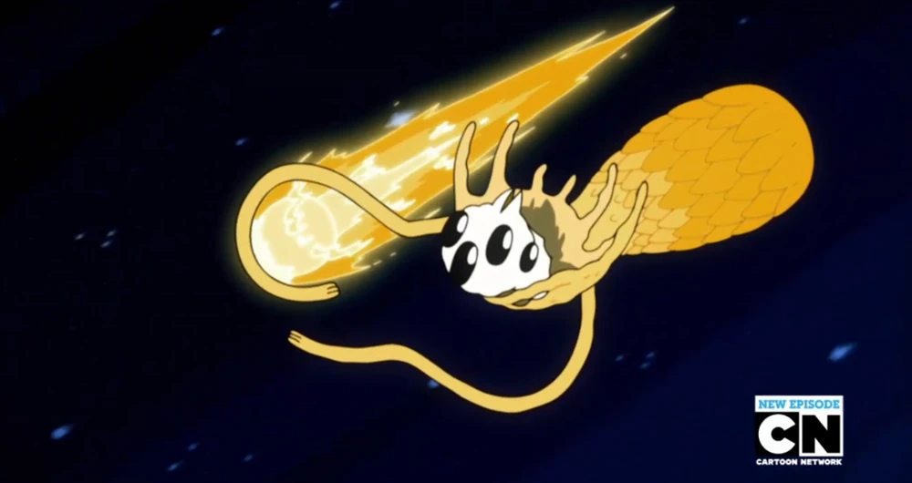
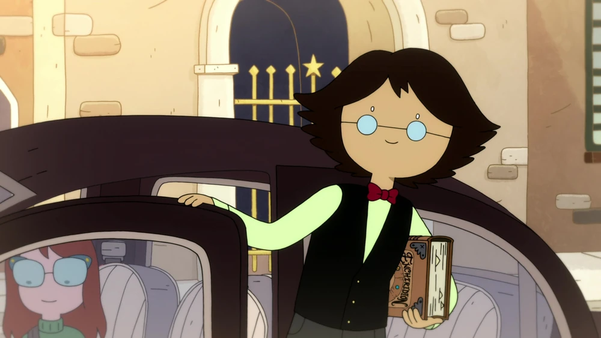
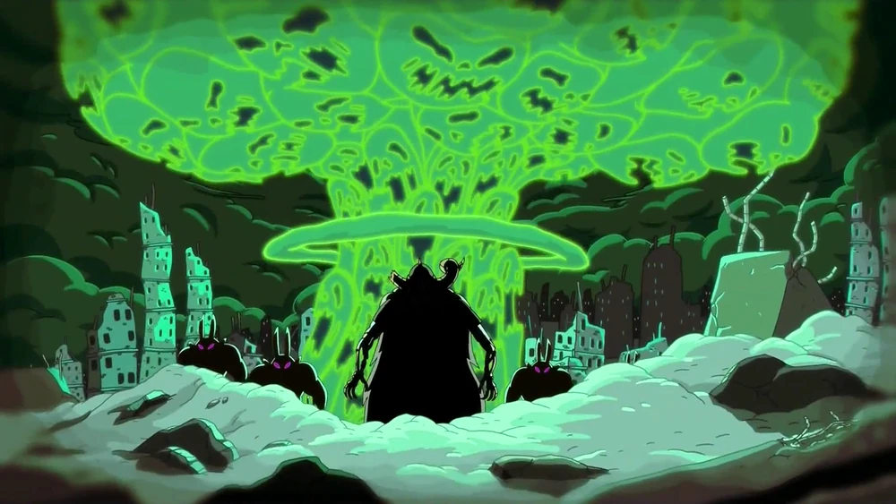
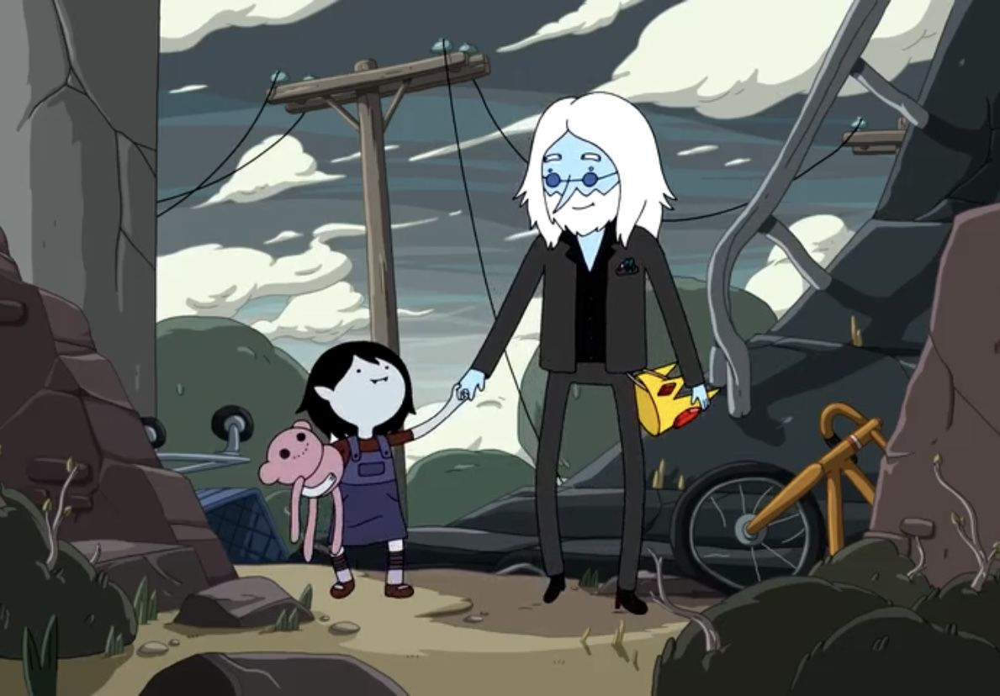
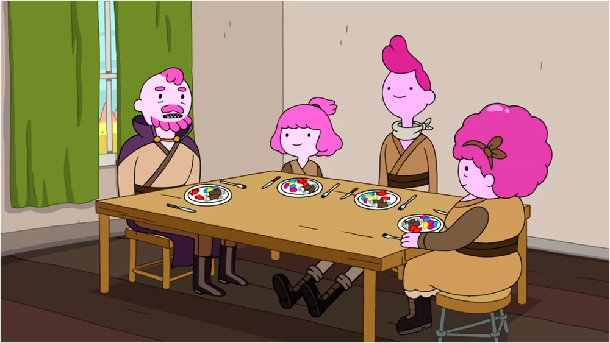
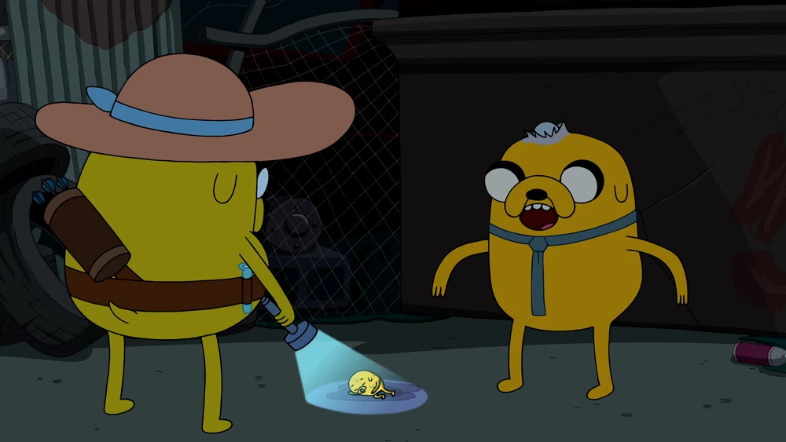
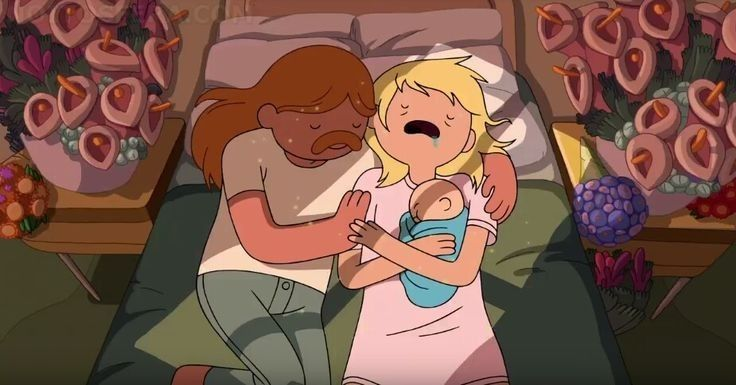

Según el Lich , antes de que existiera el universo no había nada, y antes de que no hubiera nada, "había monstruos". El Lich, Orgalorg y Coconteppi existieron desde tiempos remotos.

La civilización humana se apodera de la Tierra. ~5 años BMW: Simon y Betty descubren el Enchiridion. ~4 años BMW: Nace Marceline

Tiene lugar la Guerra de los Hongos, la cual mata a la mayoría de los humanos y muta formas de vida. También provoca el Invierno Nuclear. De la Bomba Hongo surge el Lich.

Simon Petrikov adopta a una niña mitad demonio, Marceline, y la cría en el nuevo mundo postapocalíptico hasta que se ve obligado a abandonarla como resultado de su pérdida de cordura, convirtiéndose finalmente en el Rey Helado .

La Princesa Chicle y Neddy nacen al caer de la Madre Chicle. La Dulce Princesa, sintiéndose sola, crea al tío Gumbald, a la tía Lolly y al primo Chicle. Gumbald intenta obtener el poder su intento fracasa y el trío se convierte en dulces, olvidando sus identidades.

Warren Ampersand llega a la Tierra de Ooo para transmitir sus poderes elásticos a una pareja compatible. Warren encuentra a Joshua, el perro, y lo infecta/embaraza, dando lugar al nacimiento de Jake . Margaret da a luz a Jermaine .

Finn nace en Hub Island, hijo de Martin Mertens y Minerva Campbell. El Guardián de la isla natal Martin lo confunde con un Hider y para salvar la vida de Finn y la suya propia. Deja a Finn en la balsa, y Finn se dirige a Ooo, donde finalmente lo encuentran, lo adoptan y lo crían Joshua y Margaret.